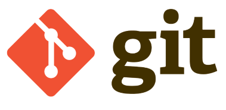
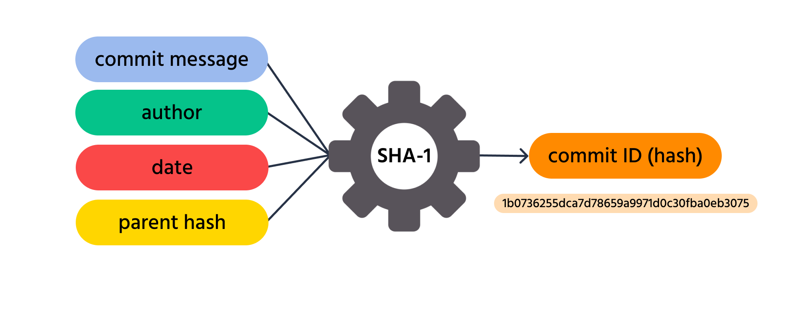
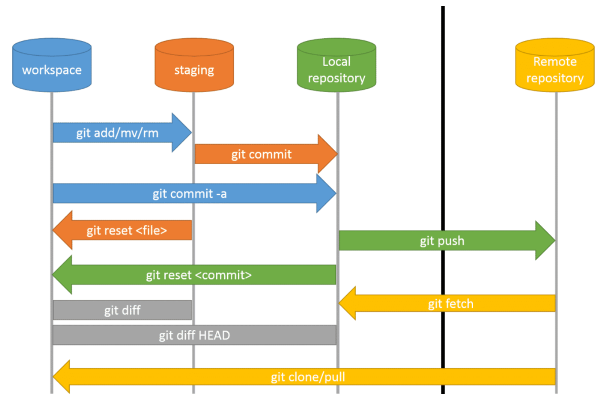
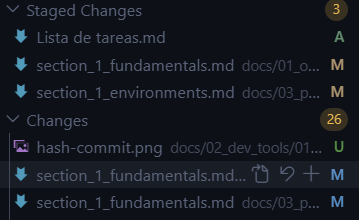
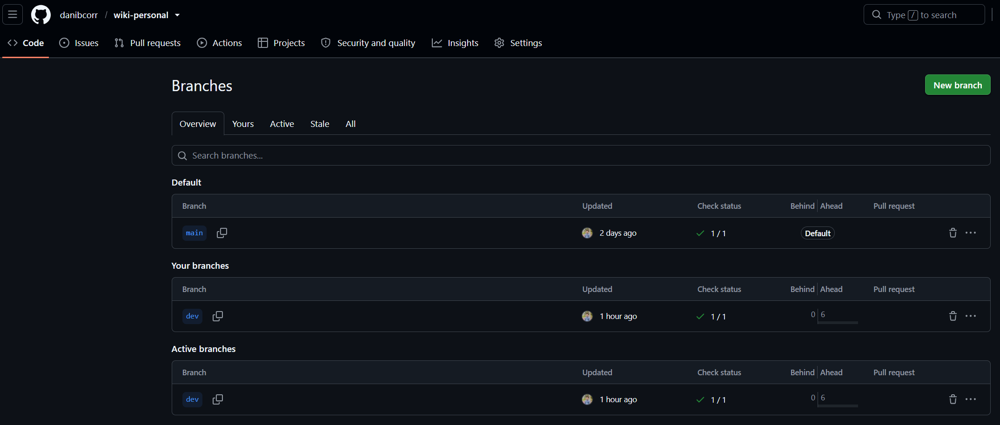
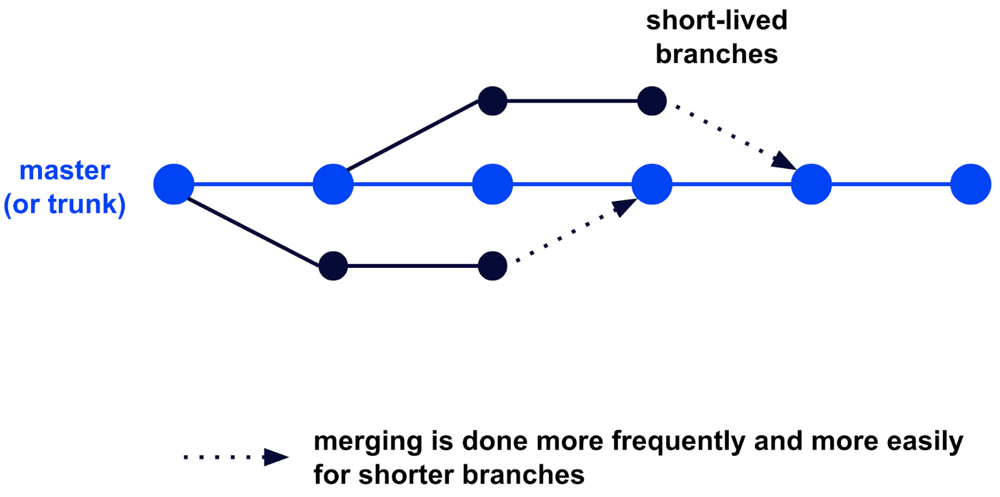
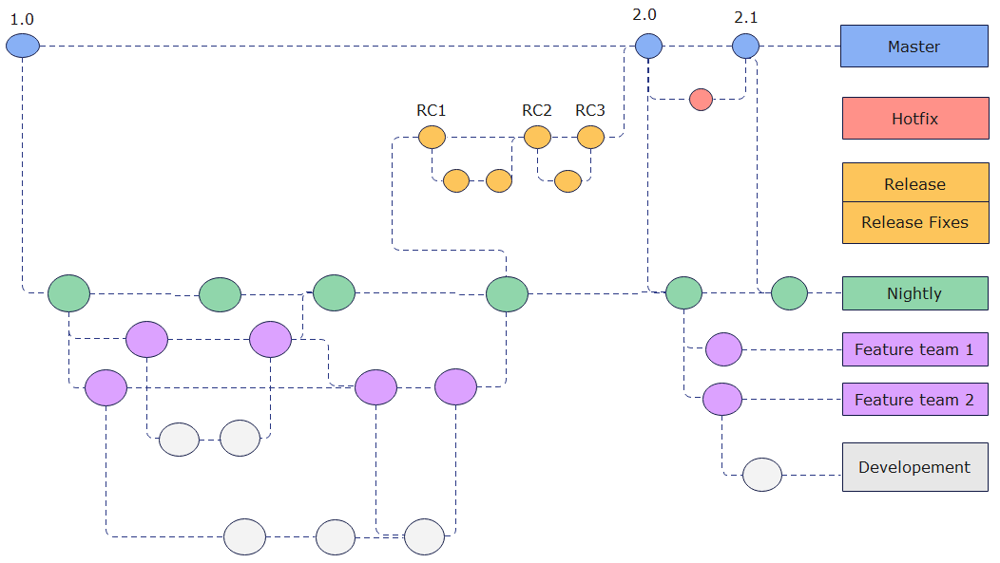
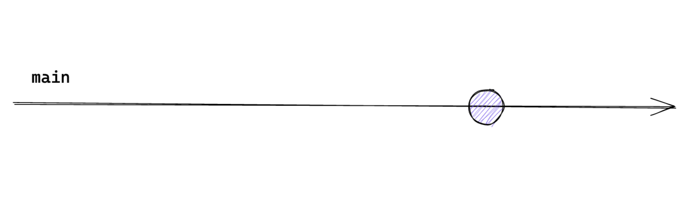
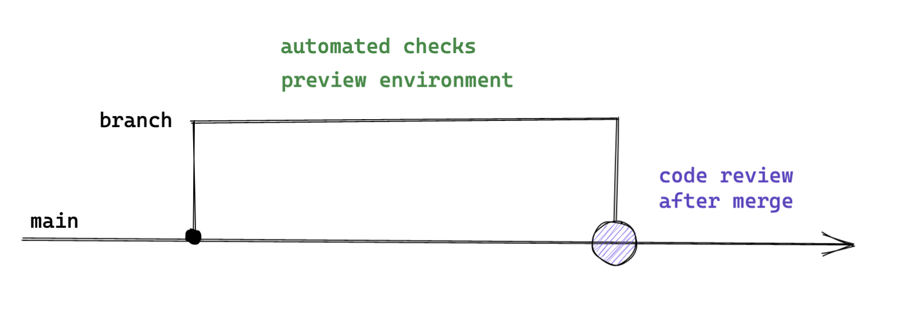
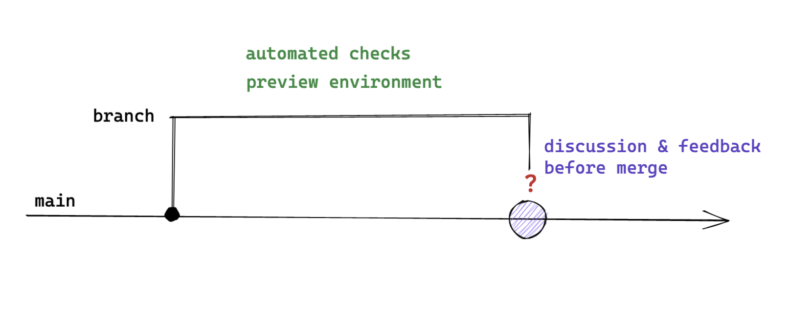

Fundamentos y comandos
Este capítulo introduce Git como sistema de control de versiones distribuido, su terminología, las áreas de trabajo que lo componen, los comandos esenciales para gestionar un repositorio y las estrategias de ramificación más extendidas.
Bibliografía¶
- Umali, A. (2024). Learning Git: A Hands-On and Visual Guide to the Basics of Git. O'Reilly Media. https://www.oreilly.com/library/view/learning-git/9781098133900/
- Wilsenach, R. (2021). Ship / Show / Ask: A modern branching strategy. Martin Fowler. https://martinfowler.com/articles/ship-show-ask.html
Introducción¶

Git es un sistema de control de versiones diseñado para gestionar el historial de cambios en proyectos de software. Permite a los equipos de desarrollo colaborar de forma eficiente, realizar un seguimiento detallado de las modificaciones en el código fuente y administrar distintas versiones de un proyecto a lo largo del tiempo. Fue creado por Linus Torvalds, quien también desarrolló el kernel de Linux, con el objetivo de disponer de una herramienta rápida, distribuida y capaz de manejar proyectos de gran envergadura.
Plataformas como GitHub o GitLab se construyen sobre Git para facilitar la gestión de proyectos y la colaboración en línea. Estas herramientas proporcionan interfaces gráficas que simplifican las operaciones habituales del control de versiones y ofrecen funcionalidades adicionales como la integración y el despliegue continuos (CI/CD), lo que permite automatizar los procesos de compilación, pruebas y publicación del software.
Control de versiones¶
El control de versiones es un mecanismo que permite gestionar los cambios en archivos a lo largo del tiempo y facilita la recuperación de versiones anteriores cuando resulta necesario.

Puede entenderse como un sistema de etiquetas de cambios. Cada vez que se guarda un cambio mediante un commit, Git genera un identificador único, denominado hash, que registra el estado exacto de los archivos en ese momento. Este identificador permite consultar, comparar o restaurar versiones anteriores de manera segura y organizada.
Terminología¶
Antes de describir el funcionamiento interno de Git conviene fijar el vocabulario que se emplea a lo largo del capítulo:
- Repositorio local: Espacio en el equipo donde se almacenan todos los archivos de un proyecto y sus versiones anteriores. Git realiza el seguimiento de los cambios en estos archivos sin necesidad de conexión a internet.
- Repositorio remoto: Copia del repositorio local almacenada en internet o en una red externa. Plataformas como GitHub, GitLab o Bitbucket permiten que varias personas trabajen en el mismo proyecto desde diferentes ubicaciones.
- Histórico (log): Registro que muestra todos los cambios realizados en el proyecto a lo largo del tiempo. Cada commit queda registrado en este historial junto con la fecha, el autor del cambio y una descripción de lo modificado. También se conoce como commit history.
- Conflicto: Situación que se produce cuando Git no puede combinar automáticamente los cambios de diferentes personas en un mismo archivo. Por ejemplo, si dos personas editan la misma línea y después intentan guardar sus cambios en el repositorio remoto, Git no puede determinar qué versión debe mantener y marca un conflicto. En ese caso es necesario revisar y decidir manualmente qué cambios conservar.
Áreas de trabajo¶


Un repositorio local se organiza en tres áreas complementarias que determinan en qué punto del ciclo de vida se encuentra cada cambio:
- Working Directory: Directorio de trabajo donde se modifican los archivos. Los archivos nuevos que se añaden en esta área permanecen en estado untracked, es decir, sin seguimiento, hasta que se incorporan explícitamente al control de versiones.
- Área de preparación (staging area): Espacio de borrador donde se preparan los
cambios que formarán parte del siguiente commit. Se materializa en un archivo
denominado
index, ubicado dentro del directorio.giten la raíz del repositorio. Los archivos añadidos a esta área pasan a estar tracked, es decir, con seguimiento. - Historial de commits (commit history): Área donde se almacenan de forma permanente todas las versiones confirmadas del proyecto.
Estas tres áreas, junto con los metadatos y las referencias contenidos en el directorio
.git, constituyen el repositorio local. El flujo de trabajo típico consiste en
modificar archivos en el directorio de trabajo, añadirlos al área de preparación
mediante git add, confirmarlos en el historial con git commit y, finalmente,
publicarlos en el repositorio remoto con git push.
Estados de un archivo¶

Durante su ciclo de vida en Git, un archivo puede pasar por diferentes estados:
- Sin seguimiento (untracked): El archivo es nuevo y Git aún no lo rastrea. No se
guarda en el historial del repositorio hasta que se añade manualmente con
git add. - Ignorado (ignored): Los archivos de configuración personal o temporales pueden
declararse en una lista especial denominada
.gitignore. Git los omite y no los incorpora al repositorio. - Modificado (modified): El archivo ha sido editado después de su última confirmación, pero esos cambios todavía no se han preparado.
- Preparado (staged): Una vez que el archivo modificado se añade con
git add, entra en estado staged, lo que significa que está listo para incorporarse a la próxima confirmación. - Confirmado (committed): Cuando se ejecuta
git commit, los cambios preparados se guardan en la base de datos de Git y quedan registrados de manera permanente en el historial del repositorio.
Al inspeccionar el estado del repositorio, ya sea mediante git status --short o a
través de la interfaz de un editor, cada archivo aparece acompañado de un código que
resume su situación respecto al control de versiones:
| Código | Significado | Descripción |
|---|---|---|
A |
Added (añadido) | Archivo nuevo que se ha añadido al área de preparación. |
M |
Modified (modificado) | Archivo ya rastreado que ha sido modificado. |
D |
Deleted (eliminado) | Archivo que ha sido eliminado del control de versiones. |
R |
Renamed (renombrado) | Archivo que ha sido renombrado. |
U |
Unmerged (sin fusionar) | Archivo con conflictos pendientes de resolución tras una fusión. |
?? |
Untracked (sin seguimiento) | Archivo nuevo que Git todavía no rastrea. |
Uso de Git¶
Línea de comandos¶
La forma canónica de interactuar con Git es la interfaz de línea de comandos (Command Line Interface, CLI). En Windows, el instalador de Git incorpora Git Bash, un emulador de terminal que proporciona la CLI de Git junto con las utilidades básicas de GNU/Linux, de modo que los comandos son idénticos en cualquier sistema operativo.
Fundamentos de Linux
Los comandos de terminal empleados en este capítulo se apoyan en las utilidades básicas de GNU/Linux, descritas en el capítulo de fundamentos de Linux.
Configuración de Git¶
Antes de comenzar a trabajar con plataformas como GitHub o GitLab es imprescindible configurar correctamente el entorno local. Esta configuración incluye, entre otros aspectos, la identidad del autor de los commits y ciertos parámetros de comportamiento global.
El comando git config --global --list permite consultar todas las variables definidas
en la configuración global junto con sus valores. Dicha configuración se utiliza, entre
otros fines, para establecer el nombre de usuario y la dirección de correo electrónico
que quedarán asociados a cada commit.
Nombre de usuario y correo¶
Git utiliza el nombre y el correo configurados para identificar la autoría de cada contribución. Ambos valores pueden definirse de forma global, de modo que se apliquen a todos los repositorios del sistema.
Configurar la identidad
La configuración resultante puede verificarse en cualquier momento:
Para restringir la configuración a un único repositorio basta con omitir la opción
--global y ejecutar los comandos dentro del directorio correspondiente.
Autenticación mediante SSH¶
El uso de claves SSH (Secure Shell) simplifica la autenticación con GitHub o GitLab, ya que evita introducir credenciales en cada operación remota. El procedimiento consiste en generar un par de claves, registrar la clave pública en la plataforma y comprobar la conexión.
Generar y registrar una clave SSH
La generación de la clave emplea el algoritmo ed25519, recomendado por su
seguridad y su tamaño reducido:
En sistemas que no admiten ed25519 se recurre a RSA con una longitud de 4096 bits:
A continuación se muestra la clave pública generada para copiarla:
La clave se registra en el apartado Settings > SSH and GPG keys de la cuenta de GitHub, o en la sección equivalente de GitLab. Por último, la conexión se verifica con el comando correspondiente a cada plataforma:
Autenticación mediante tokens personales¶
Cuando se prefiere el protocolo HTTPS (HyperText Transfer Protocol Secure) en lugar de SSH, la autenticación se resuelve con un token personal de acceso que sustituye a la contraseña en las operaciones de clonado y publicación. El proceso consiste en acceder al apartado Settings > Developer Settings > Personal Access Tokens de la plataforma, generar un token con los permisos estrictamente necesarios y utilizarlo como contraseña cuando Git solicite las credenciales.
Tratamiento de los tokens
Un token personal equivale a una contraseña con permisos sobre el repositorio. No debe almacenarse en el código ni en archivos versionados, y conviene asignarle la fecha de caducidad más corta que resulte compatible con su uso.
Comandos para el control de versiones¶
Un comando de Git se compone de tres elementos. El primero es el programa principal,
git. El segundo es el comando que define la acción concreta que se desea realizar. El
tercero, de carácter opcional, es el conjunto de opciones y argumentos que ajustan su
comportamiento.
Anatomía de un commit
En este caso, git commit define la acción de confirmar cambios, -m es una opción
que permite añadir un mensaje descriptivo y "Esto es un commit" es el argumento
asociado a dicha opción.
Buenas prácticas en los commits
Un buen commit es aquel que contiene exclusivamente los cambios relacionados con
una única tarea o propósito concreto. Conviene evitar el uso indiscriminado de
git add . y seleccionar cuidadosamente qué cambios se incluyen. Una práctica
recomendable consiste en crear tickets específicos en un gestor de tareas, como
Jira, asociar cada commit a su issue correspondiente y crear ramas dedicadas a
partir de ellos. Además, los mensajes de commit deben ser concisos, idealmente de
80 caracteres o menos, para facilitar su lectura en el historial.
La siguiente tabla describe los comandos más relevantes para la gestión del control de versiones en un repositorio local:
| Comando | Descripción | Ejemplo de uso |
|---|---|---|
git init |
Inicializa un repositorio en el directorio actual y crea el directorio oculto .git, que contiene toda la información necesaria para el control de versiones. Por defecto, la rama principal creada es main. |
git init inicializa un repositorio en el directorio actual. |
git remote |
Gestiona las conexiones entre el repositorio local y uno o varios repositorios remotos, permitiendo añadirlos, eliminarlos o listarlos. | git remote add origin url_repo asocia el repositorio remoto con el alias origin. |
git clone |
Crea una copia local completa de un repositorio existente, incluyendo su historial de commits y sus ramas. | git clone https://github.com/usuario/repositorio.git clona el repositorio indicado. |
git add |
Añade cambios al área de preparación (staging area). Git no mueve los archivos, sino que registra una instantánea de su estado actual. | git add archivo.txt prepara el archivo para el próximo commit. |
git add -p |
Añade cambios de forma interactiva, recorriendo cada fragmento modificado del archivo y preguntando si se desea incluir en el área de preparación. | git add -p archivo.txt revisa cada fragmento del archivo para decidir si se prepara. |
git commit |
Registra de forma permanente los cambios preparados en el historial del repositorio local. | git commit -m "Mensaje del commit" crea un commit con un mensaje descriptivo. |
git commit --amend |
Modifica el último commit, permitiendo cambiar el mensaje o incorporar nuevos cambios al mismo commit. Resulta útil para corregir errores recientes. | git commit --amend reabre el último commit para modificarlo. |
git reset HEAD |
Revierte la preparación de archivos que habían sido añadidos al área de preparación, sin perder los cambios en el directorio de trabajo. | git reset HEAD archivo.txt saca el archivo del área de preparación. |
git status |
Muestra el estado actual del repositorio, indicando qué archivos han sido modificados, cuáles están preparados y cuáles no reciben seguimiento. | git status muestra un resumen del estado del repositorio. |
git checkout |
Permite cambiar entre ramas o restaurar archivos a su último estado confirmado. En versiones recientes de Git se recomienda git switch para cambiar de rama. |
git checkout rama-nueva cambia a otra rama.git checkout -- archivo.txt descarta cambios locales. |
git branch |
Gestiona las ramas locales, permitiendo listarlas, crearlas o eliminarlas. | git branch lista las ramas.git branch rama-nueva crea una nueva rama. |
git merge |
Fusiona los cambios de una rama en la rama actual e integra sus commits en el historial. | git merge rama-nueva fusiona rama-nueva en la rama actual. |
git merge --abort |
Cancela una fusión en curso y restaura el estado anterior del directorio de trabajo. Resulta útil cuando surgen conflictos que se prefiere no resolver en ese momento. | git merge --abort cancela la fusión en curso. |
git merge -X theirs |
Fusiona aceptando automáticamente los cambios de la rama entrante en caso de conflicto y descarta los de la rama actual. | git merge -X theirs rama-feature fusiona aceptando los cambios de rama-feature. |
git fetch |
Descarga información actualizada del repositorio remoto sin modificar la rama local ni el directorio de trabajo, lo que permite inspeccionar los cambios antes de integrarlos. | git fetch origin descarga los cambios del remoto origin. |
git fetch --prune |
Descarga los cambios del repositorio remoto y elimina las referencias locales a ramas remotas que ya no existen. Resulta fundamental para evitar la acumulación de ramas obsoletas. | git fetch --prune limpia las referencias a ramas remotas eliminadas. |
git pull |
Combina git fetch y git merge en un solo comando, descargando y fusionando los cambios del repositorio remoto con la rama actual. |
git pull origin main actualiza la rama local main. |
git push |
Envía los commits locales al repositorio remoto y hace públicos los cambios confirmados. | git push origin main sube los commits a la rama main remota. |
git log |
Muestra el historial de commits del repositorio, lo que permite analizar la evolución del proyecto. | git log muestra el historial completo.git log --oneline muestra un resumen compacto. |
git diff |
Muestra las diferencias entre archivos en distintos estados, como entre el directorio de trabajo y el último commit o entre commits concretos. | git diff muestra los cambios no confirmados. |
git stash |
Guarda temporalmente los cambios no confirmados y limpia el directorio de trabajo, lo que permite cambiar de contexto sin perder el trabajo en curso. | git stash guarda los cambios.git stash pop los recupera. |
git rm |
Elimina archivos del repositorio y del área de preparación, registrando la eliminación para el próximo commit. | git rm archivo.txt elimina el archivo del control de versiones. |
git rebase |
Reaplica commits sobre una base distinta y mantiene un historial lineal. Resulta especialmente útil para actualizar ramas respecto a la rama principal. | git rebase main reaplica los commits actuales sobre main. |
git rebase --abort |
Cancela un rebase en curso y restaura la rama a su estado original previo a la operación. | git rebase --abort cancela el rebase en curso. |
git clean |
Elimina archivos sin seguimiento del directorio de trabajo. Debe emplearse con precaución, ya que borra archivos de forma permanente. | git clean -f elimina los archivos sin seguimiento. |
Ramas¶

Una rama (branch) es un puntero móvil que apunta a un commit específico dentro del historial del proyecto. Las ramas permiten crear líneas de desarrollo independientes a partir de un punto común, de modo que es posible trabajar en nuevas funcionalidades, correcciones o experimentos sin alterar el código de la rama principal.
Una vez que el trabajo en una rama se considera estable, puede integrarse de nuevo en la rama de origen mediante una operación de fusión (merge). Este mecanismo constituye uno de los pilares fundamentales de Git, ya que facilita el desarrollo paralelo y la organización del flujo de trabajo en equipos de cualquier tamaño.
La metodología más básica emplea una rama principal denominada main, anteriormente
master, término que ha caído en desuso por convención de la comunidad. Esta rama es la
que se lleva a producción y debe estar siempre disponible. De forma adicional se
mantiene una rama de desarrollo, dev, que incorpora las nuevas funcionalidades que
posteriormente se añadirán a la rama principal. A partir de ambas es posible crear
subramas que permiten implementar cada característica por separado, aunque el detalle
depende de la metodología de trabajo adoptada.
%%{init: { 'theme': 'base', 'themeVariables': {
'git0': '#2ecc71',
'git1': '#3498db',
'git2': '#e74c3c',
'commitLabelFontSize': '16px',
'tagLabelFontSize': '16px'
}}}%%
gitGraph
commit id: "v1.0"
commit id: "v1.1"
branch dev
commit id: "nueva función"
commit id: "mejoras"
branch feature/login
commit id: "login-ui"
commit id: "login-api"
checkout dev
merge feature/login
commit id: "tests"
checkout main
merge dev id: "v2.0"En general, las ramas pueden clasificarse según su duración y propósito:
- Ramas de ejecución prolongada (long-running branches): Existen durante toda la
vida del proyecto, como
mainodev. Representan estados estables del código y no se eliminan tras una integración. - Ramas de funcionalidad (feature branches): Se crean para desarrollar una funcionalidad concreta. Tienen un periodo de vida corto y se eliminan una vez que sus cambios se integran en la rama principal o de desarrollo.
- Ramas de vida corta (short-lived branches): Se basan directamente en las ramas principales y se utilizan para correcciones rápidas (hotfixes) o cambios menores.
Documentar la estrategia de ramas
Constituye una buena práctica definir y documentar la estrategia de ramas en la propia documentación del proyecto, de modo que todos los miembros del equipo compartan un criterio común sobre cómo y cuándo crear, nombrar y fusionar ramas.
Junto a las ramas, Git mantiene el puntero HEAD, que indica la rama en uso y, a través
de ella, el commit activo. También es posible situarse directamente en un commit que
no está apuntado por ninguna rama, situación conocida como detached HEAD state.
Merge y pull requests¶
La incorporación de los cambios de una rama a otra se realiza mediante merges o pull
requests. En este proceso intervienen dos ramas. La rama source contiene los cambios
que se desean incorporar, mientras que la rama target es aquella donde se introducirán
dichos cambios. Un caso habitual consiste en emplear dev como rama source y main
como rama target.
%%{init: { 'theme': 'base', 'themeVariables': {
'git0': '#2ecc71',
'git1': '#3498db',
'commitLabelFontSize': '16px',
'tagLabelFontSize': '16px'
}}}%%
gitGraph
commit id: "commit A"
commit id: "commit B"
commit id: "commit C"
branch dev
commit id: "commit 1"
commit id: "commit 2"
commit id: "commit 3"
commit id: "commit 4"
checkout main
merge dev id: "merge commit"Estrategias de ramificación¶
Las estrategias de ramificación están estrechamente vinculadas con la forma en que se crean, desarrollan y combinan las ramas dentro de un mismo repositorio. Definen un conjunto de convenciones que determinan cuándo crear una rama, qué propósito debe cumplir y cómo debe integrarse de nuevo en el flujo principal.
Cada estrategia responde a necesidades distintas en función del tamaño del equipo, la frecuencia de los despliegues y el nivel de complejidad del proyecto. A continuación se presentan tres de las más extendidas.
Trunk-Based Development¶


En esta estrategia, los desarrolladores fusionan con mucha frecuencia pequeñas actualizaciones en una única rama principal. Sus principales ventajas son las siguientes:
- Facilita la integración y el despliegue continuos: La fusión de cambios pequeños y frecuentes resulta idónea para entornos que practican CI/CD, ya que permite despliegues rápidos y regulares.
- Fomenta la iteración rápida y la colaboración: Los desarrolladores pueden trabajar en paralelo e integrar sus cambios con rapidez, lo que acelera el ciclo de desarrollo.
Frente a ellas presenta los siguientes inconvenientes:
- Gestión en equipos grandes: Resulta difícil de sostener en equipos numerosos sin una disciplina y una coordinación estrictas.
- Rastreo de cambios individuales: Ofrece menos trazabilidad que Git Flow, lo que puede dificultar la identificación de problemas específicos.
Git Flow¶


Esta estrategia utiliza múltiples ramas con propósitos diferenciados, como ramas de funcionalidad, de lanzamiento y de corrección. Sus principales ventajas son las siguientes:
- Organización y estructura: El modelo resulta altamente organizado, lo que facilita la gestión de proyectos complejos.
- Seguimiento detallado de cambios: Permite rastrear los cambios individuales con precisión, lo que resulta útil para auditorías y revisiones de código.
- Adecuación a ciclos de lanzamiento largos: Se ajusta bien a proyectos que requieren una planificación y una gestión detalladas.
Frente a ellas presenta los siguientes inconvenientes:
- Complejidad: La gestión de múltiples ramas exige más esfuerzo y coordinación.
- Ralentización del desarrollo: Si no se gestiona correctamente, la necesidad de mantener y fusionar múltiples ramas puede frenar el proceso de desarrollo.
Ship / Show / Ask¶
Uno de los problemas recurrentes en el desarrollo de software moderno reside en el crecimiento progresivo del código, el aumento de su complejidad y la consiguiente pérdida de visibilidad por parte del resto de los miembros del equipo. Esta situación provoca que la incorporación de nuevas funcionalidades en las ramas de producción se vea limitada o que, en muchos casos, la responsabilidad del control de calidad recaiga casi exclusivamente en las herramientas de integración y despliegue continuos, lo que reduce la interacción humana en el proceso de revisión.
En este contexto surge la estrategia Ship / Show / Ask, propuesta por Rouan Wilsenach, que redefine la forma de trabajar con ramas y solicitudes de integración. El enfoque se articula en tres modalidades diferenciadas que buscan equilibrar velocidad, calidad y comunicación dentro del equipo.

El enfoque Ship se basa en la realización de cambios pequeños, acotados y de bajo riesgo que pueden integrarse directamente en la rama principal sin necesidad de abrir una pull request ni de solicitar la revisión explícita de otros miembros del equipo. Resulta especialmente adecuado cuando se añade una funcionalidad siguiendo un patrón existente, se corrige un error menor, se actualiza documentación o se mejora el código a partir de comentarios previos.

La modalidad Show introduce un punto intermedio entre la integración directa y la revisión formal. En este caso se crea una pull request desde una rama distinta de la principal, pero dicha solicitud no requiere aprobación obligatoria para ser integrada. El cambio pasa por los mecanismos habituales de CI/CD y se incorpora con rapidez a la base de código, al tiempo que se genera un espacio explícito para la revisión, el aprendizaje y la conversación. El equipo recibe la notificación de la pull request, lo que permite que otros desarrolladores revisen el enfoque adoptado, planteen preguntas o sugieran mejoras. Esta modalidad resulta especialmente útil cuando se busca retroalimentación sobre cómo mejorar una solución, cuando se introduce un nuevo patrón, cuando se realiza una refactorización relevante o cuando se corrige un error interesante desde el punto de vista técnico. De este modo se favorece el aprendizaje colectivo sin frenar el flujo de entrega.

Por último, el enfoque Ask representa el modelo más tradicional y deliberativo, y consiste en abrir una pull request que sí requiere la aprobación explícita de uno o varios miembros del equipo antes de ser integrada. Este modelo se reserva para situaciones de mayor incertidumbre o riesgo, como propuestas experimentales, nuevos enfoques arquitectónicos o soluciones que aún no están completamente maduras. En estos casos, el objetivo principal es fomentar la discusión abierta, validar decisiones técnicas y construir consenso. Resulta adecuado cuando existen dudas sobre la viabilidad de una solución, cuando se exploran alternativas, cuando se solicita ayuda para mejorar una implementación o cuando el trabajo se deja pendiente de revisión para una integración posterior.
Una vez establecidos el vocabulario, los comandos y la estrategia de ramificación, el siguiente paso consiste en automatizar las comprobaciones del flujo de trabajo y resolver las situaciones problemáticas que surgen en el día a día, aspectos que se abordan en el capítulo de hooks y casos prácticos.